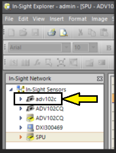
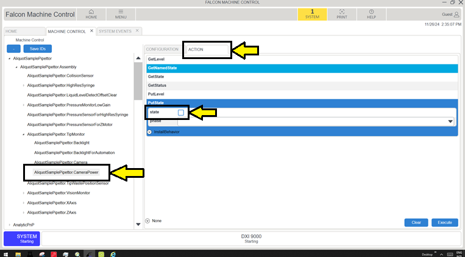

This topic includes information about how to turn on the aliquot sample pipettor camera.
Press the
Windows key and go to
Cognex > In-Sight Explorer to open the In-Sight Explorer application.
In the In-Sight Explorer application go to
View > In-sight Network to open the In-Sight Network pane.
In the In-Sight Network pane go to
In-Sight Sensors > adv102c.
Figure 380: Aliquot Sample Pipettor Camera in In-Sight Explorer

Note: If
adv102c with the gray icon is not listed in the In-Sight Sensors menu, complete the following steps.
Press the Windows key and go to
Machine Control App to open the Machine Control application.
In Machine Control go to
AliquotSamplePipettor > AliquotSamplePipettor.Assembly > AliquotSamplePipettor.TipMonitor > AliquotSamplePipettor.CameraPower.
In the Action tab select
PutState and select the
state checkbox.
Figure 381: AliquotSamplePipettor.CameraPower Actions in Machine Control

Select
Execute. If
adv102c with the gray icon is now listed in the In-Sight Sensors menu, proceed to the next step. Otherwise, complete the following steps.
In the Action tab select
PutState and clear the
state checkbox.
Select
Execute.
In the Action tab select
PutState and select the
state checkbox.
Select
Execute.
In the In-Sight Sensors menu, right-click
adv102c with the gray icon and select
Show Spreadsheet View.
Go to
Sensor > Startup to open the adv102c - Startup dialog.